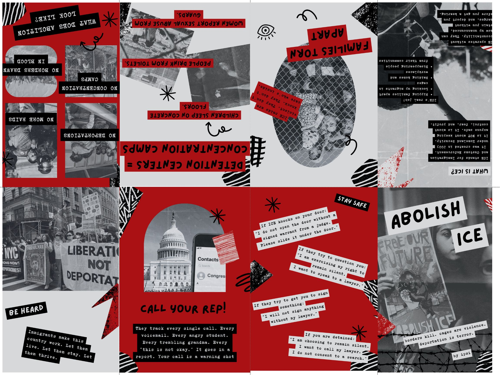
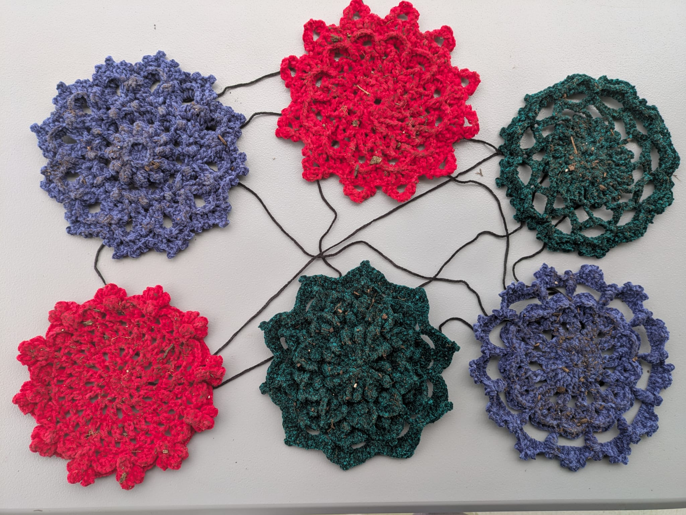
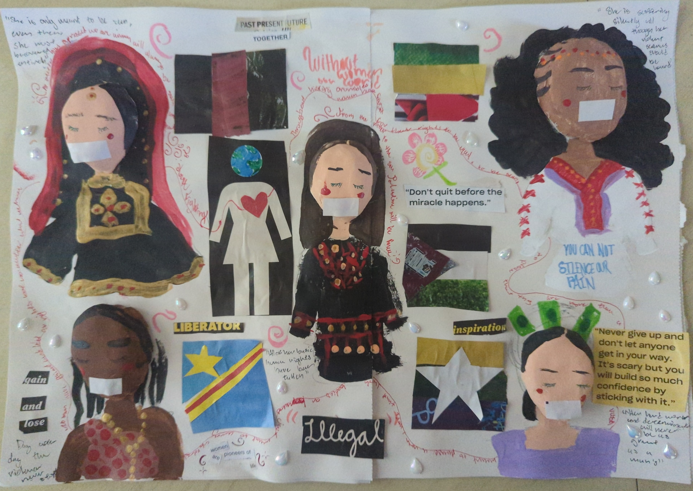

Past Cohorts and Projects
2025 Cohort Member Projects
Ipsi Karnam
Cut, Paste, Resist
Biography
i’m passionate about social justice, storytelling, and making people smile. i hope to one day be the subject of an ap gov frq. if i must die, let it be via assassination. anything less would simply be disappointing and unworthy of ending my life.
Artist Statement
For this project, I created two digitally designed zines that explore the impact of police brutality and the criminalization of immigrants in the United States. The zines are grounded in interviews I conducted with immigration lawyers and members of advocacy and aid organizations, including Amnesty International, the ACLU, and the Carolina Migrant Network. Each conversation helped me understand not only the legal realities facing undocumented people, but also the emotional and communal toll of living under constant threat.
Using bold, collage-inspired layouts, text excerpts, and personal testimony, I designed these zines to be both accessible and powerful: art that informs, agitates, and centers real people. I wanted to emphasize that undocumented status is not a crime; it is a civil offense, and no human being is illegal. That distinction matters, especially in a country where migrants are routinely targeted, detained, and deported.
My work was deeply influenced by the strong displays of resistance across the country, including the LA Riots, as well as the ongoing reality of mass deportations. Thousands of people, many with no criminal records, have been torn from their communities in just the past eight months. As the daughter of immigrants, this isn’t abstract to me. I know firsthand how many families are living in fear, how many people are punished for simply existing.
This project is about justice, but it’s also about visibility and voice. I wanted to create space for stories that often go unheard and push back against systems designed to silence. America is built on the labor, cultures, and dreams of immigrants. We deserve to feel safe here. These zines are my contribution to that ongoing fight, for truth, for protection, and for the right to belong.
Resources
- Mijente (mijente.net)
- Detention Watch Network (detentionwatchnetwork.org)
- United We Dream (unitedwedream.org)
- “Abolition Is Not a Metaphor” by Mariame Kaba
- Interviews with immigration lawyers and advocates from organizations including the ACLU, Amnesty International, and the Carolina Migrant Network
- Historical and media analysis of the LA Riots and recent federal deportation trends

Samrah Azam
Fragments of a Desi World
Biography
Hi! My name is Samrah Azam and I'm 17 years old! I graduated from high school a year early and I'll be attending Pitt Community College in the fall as a freshman before transferring to a four-year university. In my free time, I enjoy doing anything creative, such as drawing, singing, playing guitar, and crocheting. I'm excited to create an impact with my art and look forward to meeting like-minded artists who share my passion!
Artist Statement
Throughout my life, I’ve been subjected to the harmful stereotypes and ideas that many people have about Desis, warping my own perception of my Pakistani heritage. I often felt ashamed of it and wished to be dissociated with any part of it. The West’s view of my culture had been so deeply ingrained in my mind that it overshadowed the true beauty of the Pakistani diaspora that I had grown up in.
Edward Said coined the term “Orientalism” in a book of the same name, which describes the representation of the Eastern world by the Western world and how Western imperialism has greatly influenced the idea of an inferior Eastern world. I was, and sometimes still continue to be, very much influenced by the orientalist stereotypes and colonial binaries of South Asia and hoped to represent that in my artwork. This stereotype often dictates that South Asia harbors “primitive” nations, undermining the rich and diverse cultures that thrive there. In a journal by Kunal Arnand titled Media as a Catalyst of Cultural Homogenization: A Threat to Diversity of Culture in the Era of Globalization, globalization is also cited as a root source of homogenization, as globalized media often depicts a certain image of Desis and South Asians that dictates many ideas that people have about them and their cultures. I crocheted a variety of mandalas, a staple across various South Asian cultures, to represent their vibrant traditions. I rolled each mandala in dirt to show how the homogenization of South Asia, both literally and figuratively, has diluted and distorted many people’s perceptions of South Asian cultures and practices into something that is backwards and dirty. I also wanted to show how the imposed imperialism of the West on South Asia in the past has trampled on their customs and how it has been the root of many perpetual South Asian stereotypes.
In the RAD Arts Workshop led by Anshu Shah of UNC Monsoon “Kashmir x Palestine: Parallels Across Settler-Colonialism,” I learned about the effects that European imperialism has had on both the Kashmiri and Palestinian states and how it's harmed them in a variety of ways. It’s caused displacement, war, famine, and casualties of an alarming scale, breaking apart the cultures and peoples that have been fostered in these regions, so I hoped to show that cultural fragmentation in my piece as well.

Aveana Nie
Women of the World
Biography
Hello my name is Aveana, I am originally from Charlotte NC and moved to Durham NC in 2018. I’ve always had a passion for various forms of art and love expressing myself.
Artist Statement
Solidarity and unity have manifested through nations facing crisis or oppression throughout history usually when you can find parallels within each nation’s struggles. Through a Rad Arts and UNC Monsoon workshop, I recently had an opportunity to learn about a region in South Asia called Kashmir and the conflict between India and Pakistan regarding Kashmir. Kashmir is the most militarized zone in the world and I was shocked that I haven’t seen any news coverage on what’s happening in the region. This realization of the lack of attention on Kashmir made me realize that there are so many conflicts happening in our world that barely receive any coverage such as the current events in Ethiopia and Myanmar.
For my art piece I chose to represent five countries currently facing a crisis. The countries I chose were Palestine, Congo, Myanmar, Afghanistan and Ethiopia. The original idea for my project was to have a person from each chosen country made of clay, sewing their flag together representing them unifying, these flags were all made from scraps of fabric and sewn by me. However my original clay models cracked so I improvised by sculpting faces with tape covering their mouths and scrap booking phrases associated with the problems presented in each country. The flags were scrap booked as well and I painted each representative in their traditional attire. The representative from each country isn’t someone who is rich or famous, but your average, everyday woman who doesn’t have the luxury of living a simple life with access to all their needs.
Historically women of all backgrounds or anyone who isn’t a straight, cisgendered, able-bodied, white man have been oppressed in society. I hope to show solidarity between women within my project as the women from my country have extremely restricted access for their needs and enduring torture by having their basic human rights taken away despite being the very backbone of life as they are the ones who give life and connect us all through love, family or solidarity. My original project breaking disappointed me as I was excited for the outcome, but it also gave me the opportunity to reflect on women’s struggles and how women have fought, gained then lost rights yet they kept fighting. This motivated me as I know there are women out there disappointed with how the world treats them however they keep fighting for what they want.
My project is recognition for the women in Tigray, Ethiopia experience genocide and being brutally raped, women in Palestine being held as hostages and not having access to proper feminine healthcare such as pads, epidurals or even formula for their babies, to women in Afghanistan slowly becoming hidden, empty vessels as the taliban takes their rights away one by one and not allowing them to be seen, to women in Myanmar experiencing genocide and harsh labor due to fast fashion companies, and for the women in Congo who are constantly being raped during genocide. Unfortunately, all of these problems stem from capitalism and the greed for money and power through imperialism and colonialism as we see each of these countries go through some type of crisis and war in our current world as well as in the past.
Despite all of the violence and trauma these women endure, one thing remains sure which is they are not afraid to speak up and stay resilient no matter how much they are silenced. As each woman is in their traditional attire and silenced by the world, they are surrounded by words of affirmation showing that their hard work and determination to gain their rights back or spread awareness on their situations are NOT unnoticed. My project to me serves as a reminder that women globally and historically have suffered the extremes yet have fought for their rights and continue to do so till this day. I am extremely grateful for the women of the past who have fought for my current rights and will never take my rights for granted as I am well aware of the struggles and pain other girls my age face in other countries.
Resources for Palestine
- https://youtu.be/vgzgL9D064A?si=Pc_0UGq29Aijiap2
- https://youtu.be/WujIGlA3bYc?si=YcThhAG5hXdTIXmx
- https://youtu.be/oUmFLPbpxbU?si=6175_ugnK0-zSRGe
- https://www.npr.org/sections/goatsandsoda/2024/01/11/1224201620/another-layer-of-misery-women-in-gaza-struggle-to-find-menstrual-pads-running-wa
- https://news.un.org/en/story/2025/06/1164081
Resources for Congo
- https://www.unwomen.org/en/news-stories/press-briefing/2025/02/press-briefing-by-un-women-on-the-situation-of-women-and-girls-in-the-democratic-republic-of-congo
- https://www.doctorswithoutborders.org/latest/alarming-levels-sexual-violence-eastern-drc
Resources for Myanmar
- https://myanmar.un.org/en/290409-all-myanmar-women-and-girls-rights-equality-empowerment
- https://www.usip.org/publications/2021/11/myanmars-ongoing-war-against-women
Resources for Ethiopia/Tigray
- https://www.hrw.org/tag/tigray-conflict
- https://www.theguardian.com/global-development/2025/jun/30/sexual-violence-tigray-women-abuse-gang-rape-ethiopia-eritrea
- https://youtu.be/s80mEO_Bt4I?si=kNaQlIjg-Zq1EUuU
- https://youtu.be/0ZxVLKfnacI?si=iROm2SIlWqMB3onZ
Resources for Afghanistan
- https://youtu.be/o95Mt48xVgM?si=zKUBCBt1xkhqKwOp
- https://youtu.be/MXhqCjv71fM?si=sW71ifserGPv4VoU
- https://youtu.be/1Fowf46GxXI?si=xStiOgIcbcPVPtuG
- https://youtu.be/NkuvyWOhNnY?si=s7Y5qGTUCDONtAtd
- https://www.unwomen.org/en/news-stories/feature-story/2025/06/afghanistans-women-are-still-fighting-inside-the-fight-for-rights-under-taliban
Other
The Breadwinner (2017)

Zykeriah Washington
Pride Voices
Biography
Hi my name is Zy'keriah Washington. I am an avid fan of theater and chorus. I'm a very artsy person and I also write and direct films. I'm excited to be doing something new.
Artist Statement
My artistic practice arises from a deep exploration of what Pride signifies in today's world, as we find ourselves at the crossroads of celebration and resistance, progress and backlash. Through my creations, I delve into the changing landscape of LGBTQ+ identity and activism, investigating how the meaning of Pride is evolving and adapting to confront the challenges posed by an increasingly intricate political and social climate. My art acts as both a reflection and a catalyst, mirroring the current state of queer liberation while striving for a more inclusive and intersectional future.
The core of my practice is built on the belief that Pride has never been just about celebration—it has always been fundamentally political, grounded in resistance and the quest for basic human dignity. This viewpoint is especially pertinent as we observe modern Pride movements embracing themes that highlight resistance as joy and joy as resistance. The San Francisco Pride 2025 theme "Queer Joy is Resistance" illustrates this shift, acknowledging that in times of political adversity, the mere act of living authentically and celebrating queer identity becomes a bold act of defiance. My work channels this spirit, crafting visual stories that honor both the fragility and strength found in queer visibility.
At the heart of my artistic vision is the idea of intersectionality as it pertains to the future of Pride. I draw motivation from current movements that stress the significance of amplifying all voices within the LGBTQ+ community, especially those who have been marginalized within our own spaces. The University of Wollongong's 2025 Pride initiative, which emphasizes "centering all voices through intersectionality," shapes my approach to creating art that does not merely depict a singular queer experience, but instead celebrates the diverse range of identities that make up our community. This means my work actively aims to spotlight the experiences of queer people of color, transgender individuals, and others who have been historically overlooked. Ever since the stone wall riots the LGBTQIA+ community has grown in not just members but also acceptance and even though we have gained more rights since then that doesn't mean we stop fighting. We keep fighting and celebrating because that's what Marsha would have wanted.